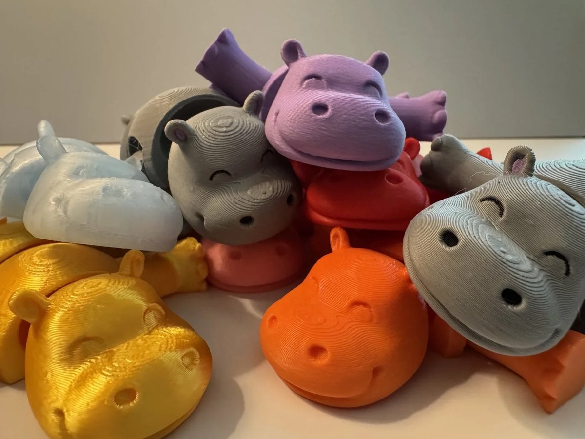
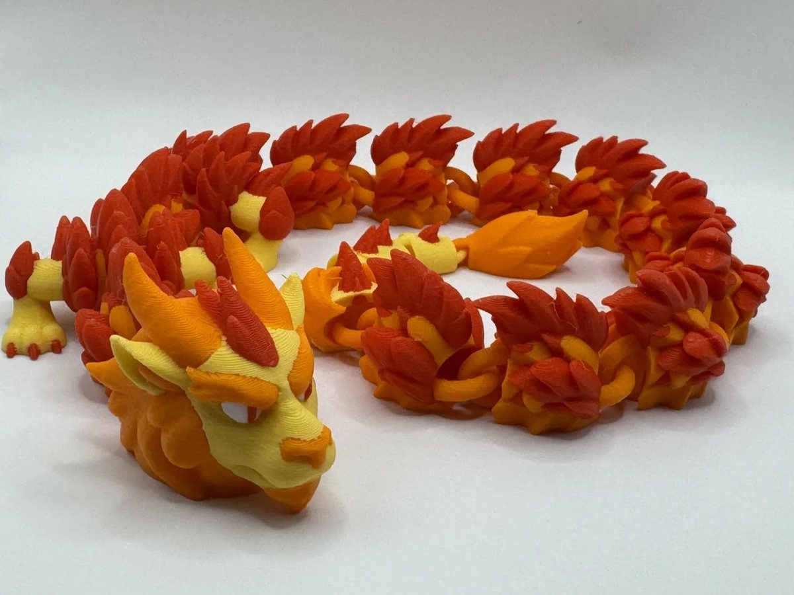
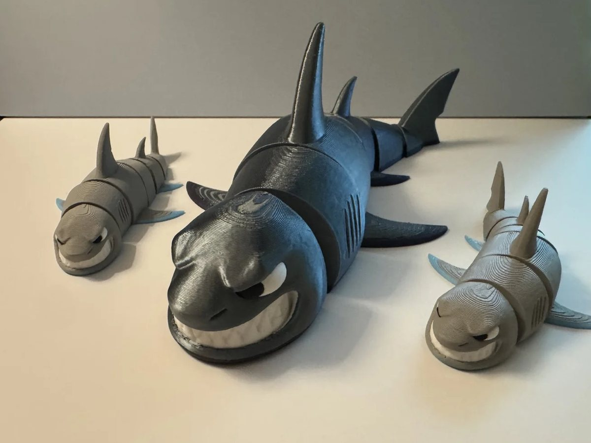
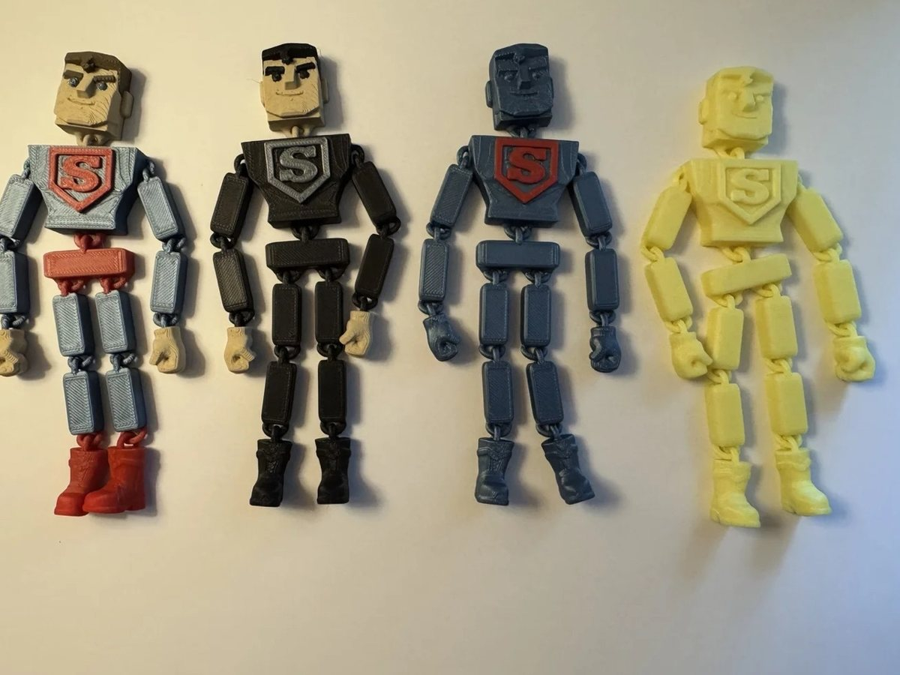
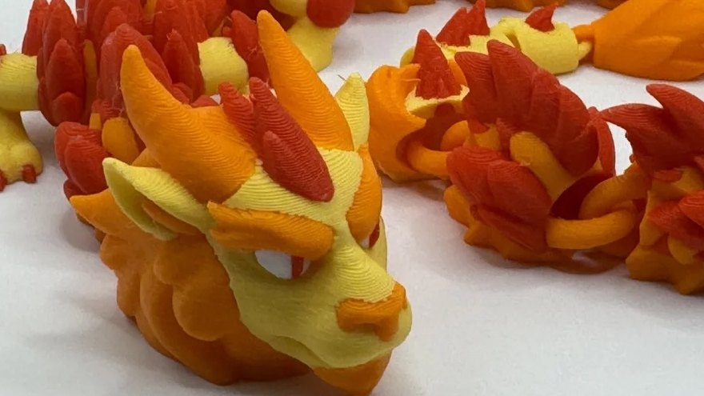
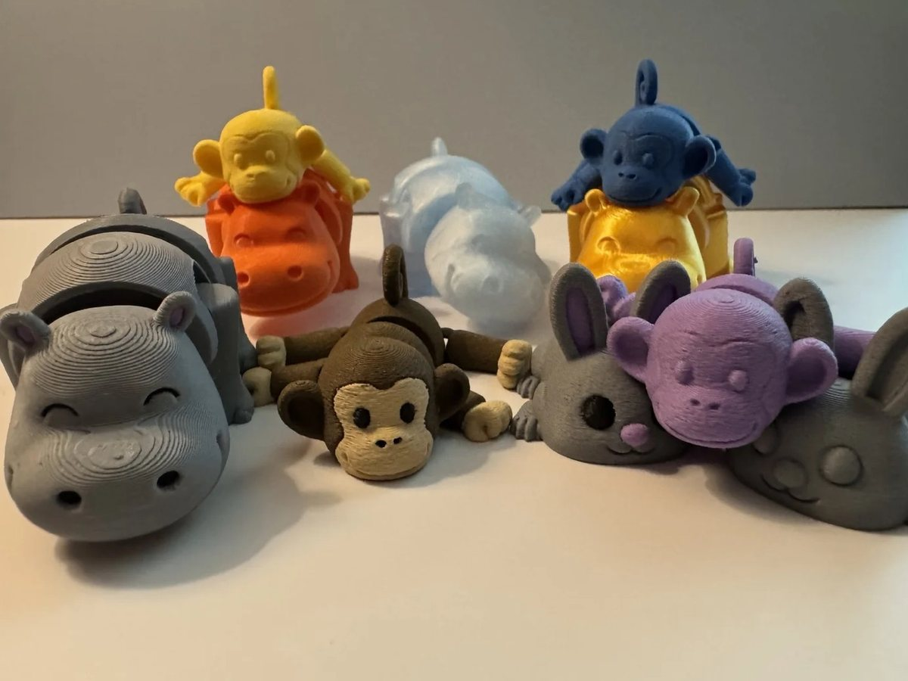
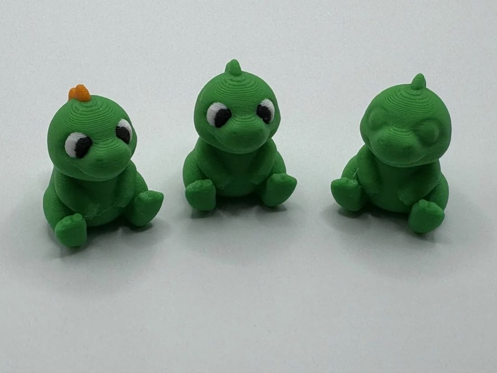
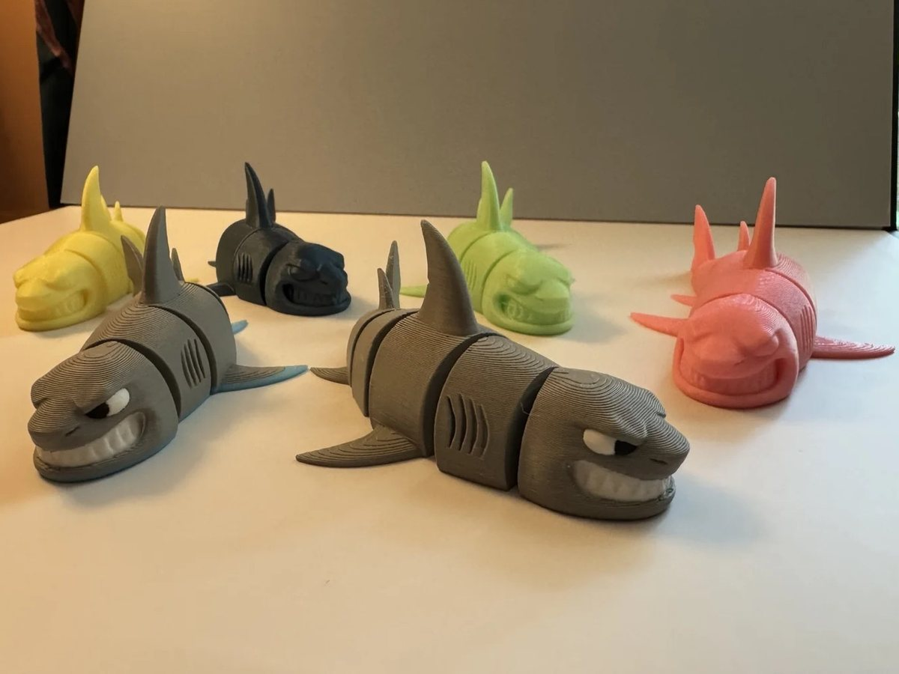
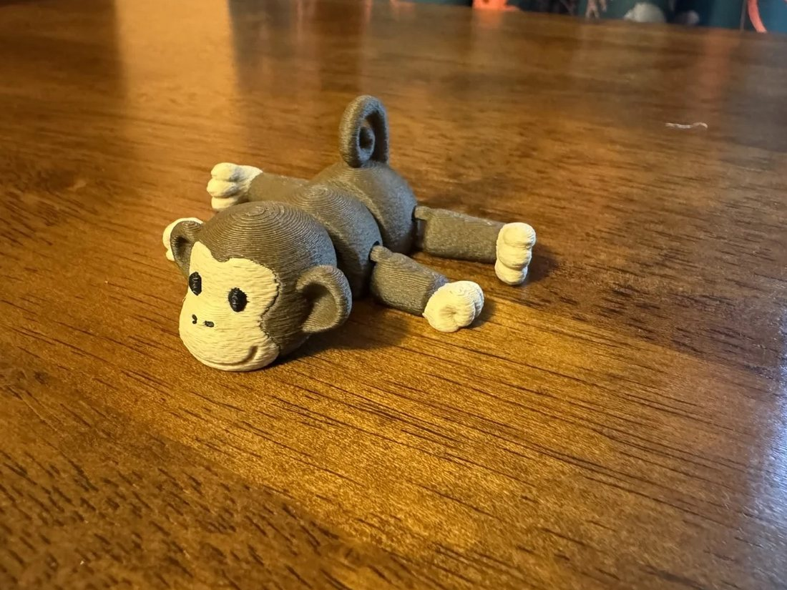

Small prints. Loud personalities.
Original print-in-place toys with attitude. Flexi creatures, poseable heroes, dragons and desk buddies, free to download and very hard to print just one of.



- 75models
- 25.4kdownloads
- 16.9kprints made
- 3.2kfollowers
- Counted on MakerWorld, November 2026
Fresh off the plate
Three picks from the shelf, dealt at random. Not your vibe? Deal again.
Every one is free to print for yourself.
Pick a shelf
Four collections. Pick the one that matches your mood.

ArticuLeague Poseable heroes and villains with rag-doll joints. Print, peel, strike a pose. 10 print-ready heroes
Echoes of Filament Articulated dragons with lore. Every link moves and every one has a story. Meet the dragons
Print Pals Friendly flexi animals. They wiggle, they grin, they multiply when you look away. 16 flexi animals
Desk Buddies & Minis Little characters for desks, backpacks and keychains. Big moods, tiny bodies. 13 desk buddiesSelling prints? Make it official.
Every Foorbits model on MakerWorld is free to print for yourself. Selling prints at a craft fair, in your shop or online takes a commercial license, and Patreon is where you get one.

The seller license
- Sell what you printLegal rights to sell physical prints of select Foorbits models.
- Easy downloadsThe print files in one place, ready for the plate.
- Early accessNew models land with members first.
- More toysYour support pays for the next batch of loud little guys.
Not a seller? Joining still keeps the filament flowing.
Your printer looks bored.
Give it something loud to do. Grab a free model tonight, or join the crew that sells them.
